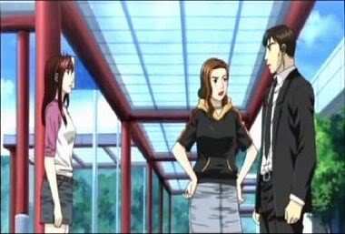
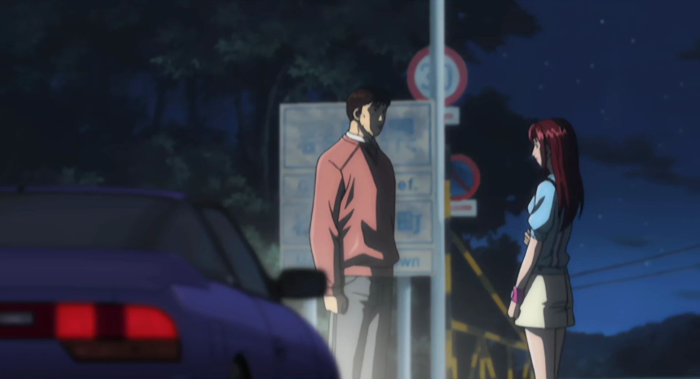

Ordem Cronológica
Extra Stage 2
O Estágio Extra 2 mostra o encerramento do Romance de Iketani e Mako. Iketani finalmente reencontrou com Mako e pediu desculpas por não ter ido ao encontro marcado há 6 meses. Mako Aceita as desculpas e disse que tinha algo a dizer a ele e marca um novo encontro. Iketani foi animado pois Mako lhe deu uma segunda oportunidade. Ele chegou 2 horas antes do encontro, porém um velho homem estava perdido e pergunta para Iketani onde ficava o Hotel em que ele ia se hospedar. Sendo uma boa pessoa, Iketani leva o velho para o Hotel. Em seu caminho de volta, ele fura o pneu reserva do carro (sendo que ele fura o outro no inicio). Ele correu e teve sorte de encontrar um telefone público. Ele Chamou Mako para o local e Mako diz que está saindo para uma corrida de um ano por uma empresa editorial. Iketani desiste do Romance.
Carros presentes
- Nissan 180SX
- Toyota AE85
- Nissan SilEighty
- Honda Civic
- Toyota AE86
- Toyota Altezza
- Nissan Silvia

